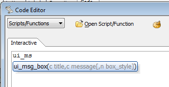
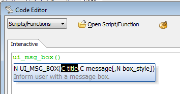
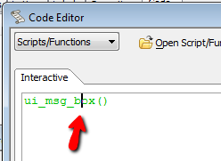
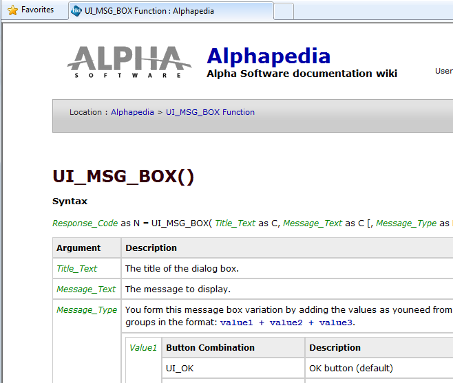

How to Get F1 Help for functions from Alpha Anywhere
Flash player not available.
When you are in the Alpha Anywhere code editor or interactive window, you will automatically get function completion as you type:

As you continue to type, you can get help for the current parameter in the function call:

If that is not enough help, close the parentheses and place your cursor inside the name of the function:

Now press F1 and the appropriate Wiki page will be launched.
